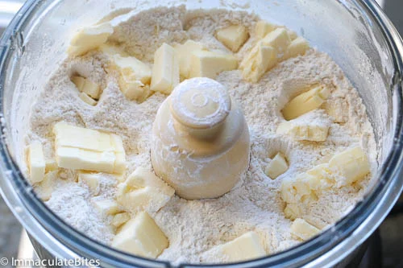

Milk Tart

Milk tart, also known as "melktert" in Afrikaans, is a traditional South African dessert consisting
of a sweet pastry crust filled with a creamy custard-like filling made primarily from milk, sugar, flour, and eggs.
The custard is typically flavored with vanilla and cinnamon, giving it a rich and aromatic taste.
Once baked, milk tart is often served chilled, and it's enjoyed for its smooth texture and delightful
combination of sweetness and spice.
It's a beloved treat in South African cuisine, often served on special occasions or as a comforting dessert enjoyed year-round.
Ingredients
Pastry Crust
- 1 1/2 cups (188 grams) all-purpose flour
- 1/3 cup (35grams ) confectioner’s sugar
- ¼ teaspoon salt
- 9 Tablespoons (125grams) unsalted butter(cold or frozen) , cut into small pieces
- ▢1 large egg yolk
Milk Filling
- 2 1/4 ( 496 ml) cups milk
- 2 tablespoon (28grams) butter
- 2 tablespoons (20 grams) flour
- 3-4 tablespoons (23- 30grams) cornstarch
- 1/2 cup (100grams) sugar
- 2 Large eggs
- 2 teaspoons vanilla extract
- ½ teaspoon almond extract (optional)
- ½ teaspoon cinnamon
- ½ teaspoon nutmeg or replace with cinnamon

Steps Involved In Making This Saffa Treat
Pastry Crust
- Butter or spray a 9-inch pie pan with a removable bottom – making sure it is has been adequately sprayed. Set aside
- Place flour, salt and sugar in a food processor pulse for a couple of times to mix ingredients
- Throw in butter and pulse until rough dough forms.
- Then add egg yolk - pulse until the dough barely comes.
- Remove dough place on a work surface - knead just enough to incorporate all the dough. Working the dough as little as possible.
- Do not overwork the dough; otherwise it’ll be too tough. When it’s ready, the dough will be barely moistened and come together into a ball.
- Lightly press the dough on the prepare pie pan – working from the center up until the bottom and sides are fully covered with pastry –
again be very gentle when pressing the dough onto the pie pan.
- Place pie pan in the freezer and freeze for at least 30 minutes or more this helps prevent the dough from rising- if you are in a rush brick, then bake with beans to prevent rising.
- Preheat oven to 400 degrees F (205 degrees C) and place rack in center of oven
- Bake crust for about 20 to 25 minutes or until the crust is dry and golden browned. Set aside
Milk Filling
- Place saucepan over medium heat, add butter, nutmeg and milk -bring to a boil and remove from the heat.
- In another bowl, mix together flour, cornstarch, sugar, vanilla and almond extract- whisk in eggs until smooth. Gently whisk into the saucepan making sure there are no lumps
- Now return the pan back on the stove – keep stirring constantly until in starts to bubble.
- Cook for about 5-6 minutes. Remove from heat and pour mixture into the baked pastry shell Sprinkle with cinnamon. Chill until ready to be served.